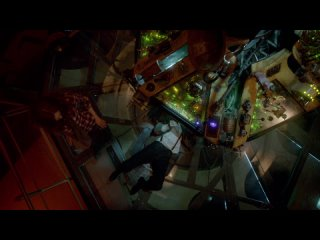
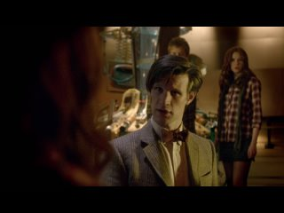
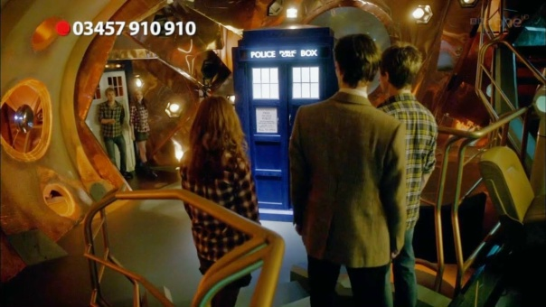

"ПРОСТРАНСТВО" | "ВРЕМЯ" |
 |  |
Space, Time
два мини-эпизода для "Разрядки смехом"
18 марта 2011
Формат: 4-минутные эпизоды
| Варианты озвучек: | * MVO BaibaKo |
|---|---|
| Скачивание и просмотр: |
Рори по вине Эми случайно разорвал тепловые связи, что привело к «экстремальной материализации», то есть ТАРДИС должна была автоматически приземлиться в самом безопасном доступном месте. Свет зажигается, и они видят, что ТАРДИС материализовалась в самом безопасном месте — внутри себя самой.
